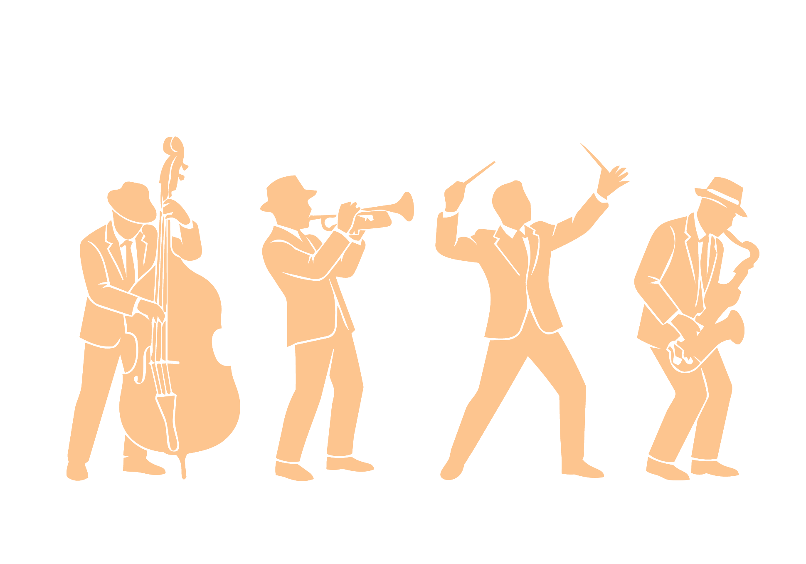

LIVE! Jazz Band
Friday October 9th, 9pm
Come experience a night like no other, one where you’re transported back in time to the Jazz Age! A night of live jazz, dancing and music inspired by the Roarin’ 20’s.

Tamara de Lempicka Art Exhibition
Saturday May 22nd - August 14th, 9am-4pm
Expirience the glamorous world of Tamara de Lempicka, a Polish painter who spent her life working in France and the US. Best known for her Art-Deco portraits and stylized paintings.

1920’s Architectural Tour
ALL Summer Long! Tours run from 8am-5pm
Discover 1920’s buildings and uncover their secrets, from speakeasy’s to hidden doors and crawl spaces left from the Prohibition! Explore the city’s skyline and the buildings that shaped it all.